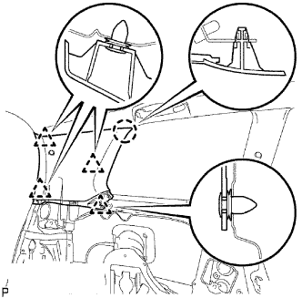

CỤM ĐAI AN TOÀN NGOÀI GHẾ SAU > LẮP |
| 1. LẮP CỤM ĐAI NGOÀI GHẾ SAU NO.2 BÊN TRÁI |
Gióng thẳng các vấu với lỗ định vị của đai an toàn và lắp bộ cuốn của đai an toàn bằng bulông như trong hình vẽ.
Nối móc vai bằng bulông.
Đóng nắp.
| 2. LẮP CỤM ĐAI GHẾ SAU NO.1 NGOÀI TRÁI |
Gióng thẳng các vấu với lỗ định vị của đai an toàn và lắp bộ cuốn của đai an toàn bằng bulông như trong hình vẽ.
Nối móc vai bằng bulông.
Đóng nắp.
| 3. LẮP TẤM ỐP TRANG TRÍ BÊN TRONG TAI XE SAU TRÁI |
|  |
Cài khớp kẹp và vấu hãm để lắp ốp trang trí.
Nối móc đai vai của đai an toàn bằng bulông.
Nhả khớp 2 vấu để đóng nắp của móc đai an toàn.
| 4. LẮP CỤM ĐAI NGOÀI GHẾ SAU NO.2 NGOÀI TRÁI |
Nối móc sàn của đai an toàn bằng bulông.
| 5. LẮP CỤM ĐAI AN TOÀN GHẾ SAU NO.1 NGOÀI TRÁI |
Nối móc sàn của đai an toàn bằng bulông.
| 6. LẮP MÓC BÊN TRONG TAI XE SAU |
| 7. LẮP GIOĂNG CỬA SAU TRÁI |
| 8. LẮP TẤM ỐP BẬU CỬA SAU TRÁI |
 |
Cài khớp 3 kẹp và 7 vấu để lắp ốp bậu cửa.
| 9. LẮP TẤM ỐP BẬU CỬA HẬU |
 |
Cài khớp 6 kẹp và 4 vấu để lắp ốp bậu cửa.
| 10. LẮP CỤM GHẾ SAU NO.2 BÊN TRÁI |
Nghiêng lưng ghế hoàn toàn về phía trước.
Hãy để ghế vào móc khoá.
 |
Lắp bu lông ởø phía sau của ghế.
Lắp bu lông ở phía trước của ghế.
Khoá hoàn toàn ghế vào móc khoá.
| 11. LẮP CÁP VÀO CỰC ÂM ẮC QUY |
| 12. TIẾN HÀNH THIẾT LẬP BAN ĐẦU |
Tiến hành thiết lập ban đầu (Xem trang Kích chuột vào đây).